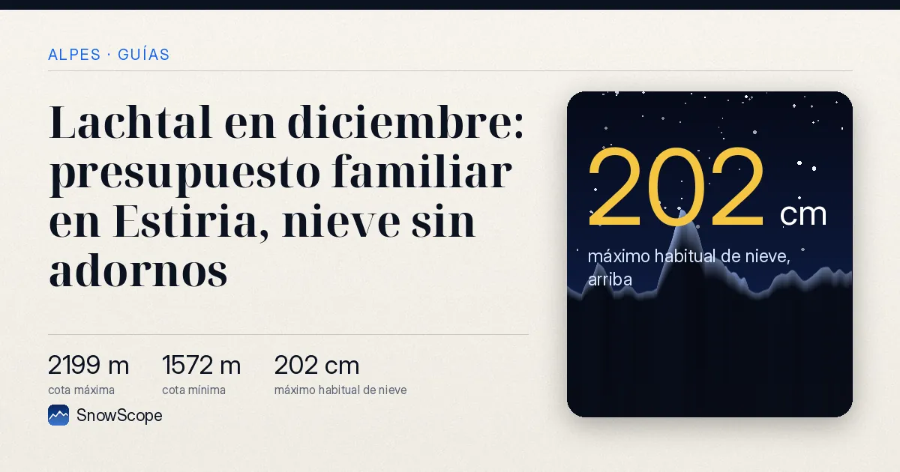

Lachtal en diciembre: presupuesto familiar en Estiria, nieve sin adornos
Empecemos por la cuenta: en Lachtal el forfait de día adulto cuesta 62 EUR en 2026-27 y los niños hasta 6 años esquían gratis. En diciembre eso te da una estación pequeña y alta de Estiria, donde la media montaña tenía 30 cm o más la semana del 15 al 21 de diciembre en el 72 % de nuestros 46 inviernos.
Consulta la previsión de nieve en tiempo real de Lachtal en la app SnowScopeEspesor de nieve, alertas de nieve polvo y mapa 3D, gratis.
Lo que cuesta un día de diciembre
La tarifa oficial 2026-27 da 62 EUR el día adulto y 326 EUR los 6 días, con un precio de 6 días más bajo, 293,50 EUR, en el periodo menos caro de la tarifa. Para una familia con un niño menor de 7 años, el forfait gratis pesa más que cualquier descuento: según la página oficial, los nacidos en 2021 o después esquían gratis.
Es un sitio pequeño: 25 km de pistas cartografiadas y 10 remontes entre 1572 m y 2199 m. Va mejor a principiantes y familias que a quien quiere una pista nueva cada hora.


Lo que te da el dinero: nieve
La base es alta para esta parte de Austria. Un 15 de diciembre típico, nuestro histórico da 30 cm en el remonte más bajo, 46 cm a media montaña (1885 m) y 58 cm en la cima. En ninguno de nuestros 46 inviernos la base estaba sin nieve el 15 de diciembre.
La semana importa. A media montaña la parte de inviernos con 30 cm o más es del 54 % del 1 al 7 de diciembre, 63 % del 8 al 14, 72 % del 15 al 21 y 78 % en Navidad. En la cima: 61, 70, 78 y 85 %.
¿Ha cambiado diciembre?
Sí, y esta es la parte sincera. La media de diciembre a media montaña bajó de 57 cm en los primeros 15 inviernos a 33 cm en los últimos 15. En la base, la parte de semanas de Navidad con 30 cm cayó del 80 % al 40 %.
El invierno pasado fue un aviso: 9 cm a media montaña el 15 de diciembre y 4 cm en la base. Aquí un diciembre flojo ya es una posibilidad real: mejor una reserva cancelable o una escapada decidida con la previsión que una semana fija.
¿La Turracher Höhe como plan B?
La Turracher Höhe, al suroeste, es la otra favorita de las familias entre Estiria y Carintia. En diciembre es más baja y más pobre: 23 cm a media montaña (1792 m) un 15 de diciembre típico y 39 % de inviernos con 30 cm la semana del 15 al 21 de diciembre. También es más cara: 72,50 EUR al día y 353 EUR por 6 días en su temporada baja, hasta el 24 de diciembre.
En diciembre, Lachtal es la más barata y la más nevada de las dos. Si ninguna tiene nieve, el plan B no es otra estación pequeña, sino una más alta.
Consejos para esquiadores
- Lleva documento: los niños nacidos en 2021 o después esquían gratis según la tarifa oficial.
- Elige la segunda mitad de diciembre; en la primera semana la media montaña tenía 30 cm solo en algo más de la mitad de nuestros inviernos (54 %).
- Reserva con cancelación y decide una semana antes, con el mapa de nieve delante.
- Fuera de pista tras una nevada: primero el boletín de aludes de Estiria.
Más mapas (sitios externos)
Referencias y créditos
- Lachtal: official lift-pass prices (2026-27), checked 13 November 2026 www.lachtal.at/en/tickets-prices/day-ski-passes/
- Turracher Höhe: official lift-pass prices (2026-27), checked 13 November 2026 www.turracherhoehe.at/en/winter/tariffs
Sobre estas cifras
Cifras de nieve: histórico de nieve de SnowScope, 46 inviernos pasados (1980-81 a 2025-26) a las alturas de la estación, corregido por altitud (una estimación para una zona, no partes de la estación); «buena nieve» = 30 cm o más en el suelo de media en la semana. Mapa: nuestro espesor habitual el 15 de diciembre repartido sobre el relieve según la altura. Pistas y remontes: cartografía OpenSkiMap. Forfaits: tarifas oficiales de las estaciones, comprobadas el 13 de noviembre de 2026; los precios pueden cambiar.
Boletines oficiales de aludes: Lawinenwarndienst Steiermark
Citar este informe
Para investigación, docencia o prensa: cifras y gráficos reutilizables libremente bajo CC BY 4.0 con esta cita.
SnowScope (2026), Lachtal en diciembre: presupuesto familiar en Estiria, nieve sin adornos, https://snowscope.app/blog/es/2026/11/lachtal-december-ski-styria-budget-snow.html, consultado el 2026-11-14
SnowScope (Atlas Labs). (2026, November 14). Lachtal en diciembre: presupuesto familiar en Estiria, nieve sin adornos. SnowScope snow reports. https://snowscope.app/blog/es/2026/11/lachtal-december-ski-styria-budget-snow.html
BibTeX
@misc{snowscope2026lachtaldecemberskistyria,
author = {{SnowScope (Atlas Labs)}},
title = {Lachtal en diciembre: presupuesto familiar en Estiria, nieve sin adornos},
year = {2026},
month = nov,
howpublished = {\url{https://snowscope.app/blog/es/2026/11/lachtal-december-ski-styria-budget-snow.html}},
note = {Published 2026-11-14 17:24 UTC; accessed 2026-11-14}
}· CC BY 4.0 · Métodos, datos y herramientas →
Lachtal: nieve y temperatura según la altura, este invierno vs el pasado (herramientas) →
Sigue Lachtal
Gratis: un aviso cuando llega la nieve y la previsión cada mañana.